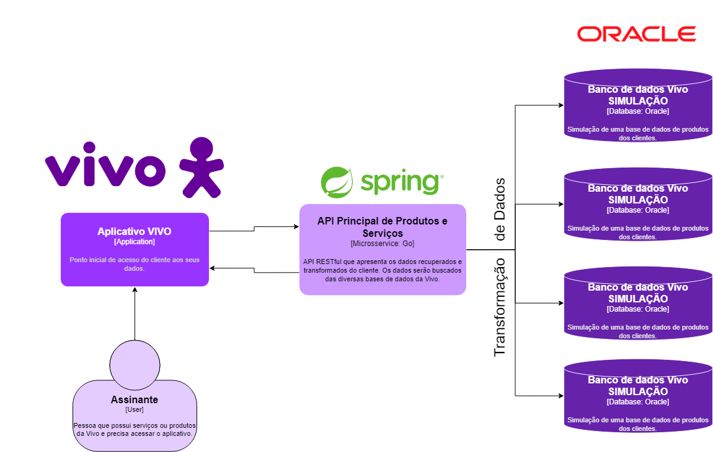

Arquitetura VIVO Atual
Como funciona?
O sistema segue um fluxo simples em que o cliente faz um pedido de dados no aplicativo da Vivo, a API busca os dados nos bancos de dados da empresa, e retorna as informações ao aplicativo se tudo for encontrado corretamente. Caso algum dado falte, nenhum dado é retornado.
Imagem do diagrama
Fluxo de Dados
- O cliente acessa o aplicativo da Vivo.
- O aplicativo envia uma solicitação à API.
- A API busca os dados nos bancos de dados.
- Se todos os dados forem encontrados, a API os transforma e retorna ao aplicativo.
- Se algum dado estiver faltando, a API não retorna nenhum dado.
- O cliente visualiza (ou não) as informações no aplicativo.